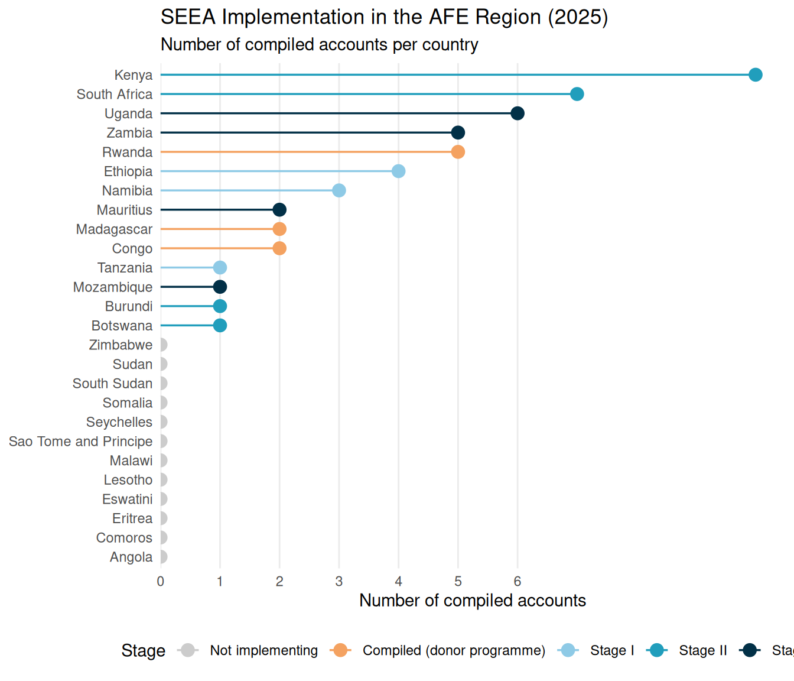
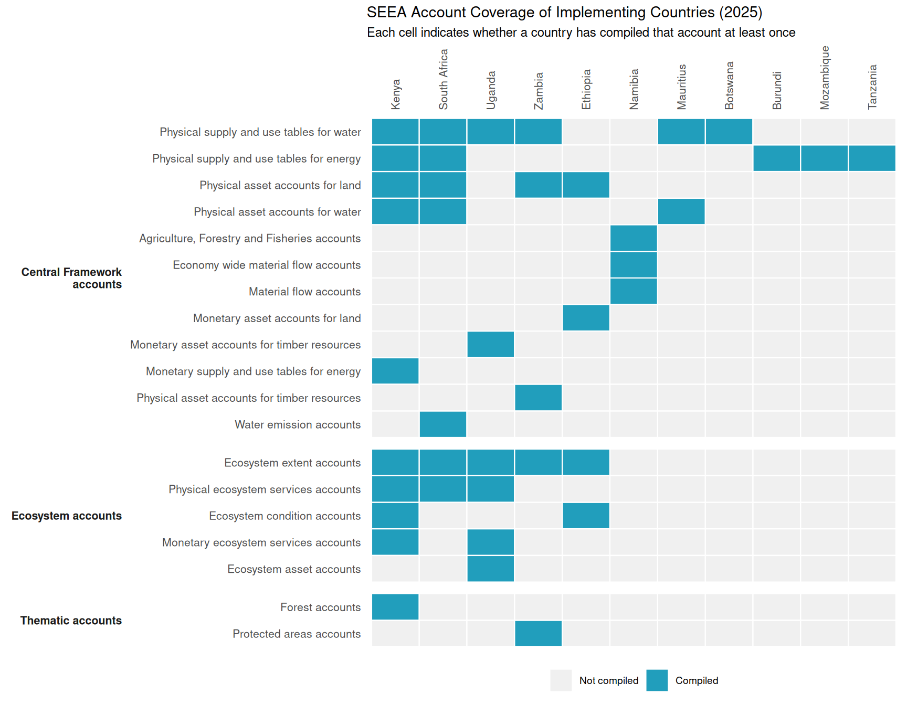
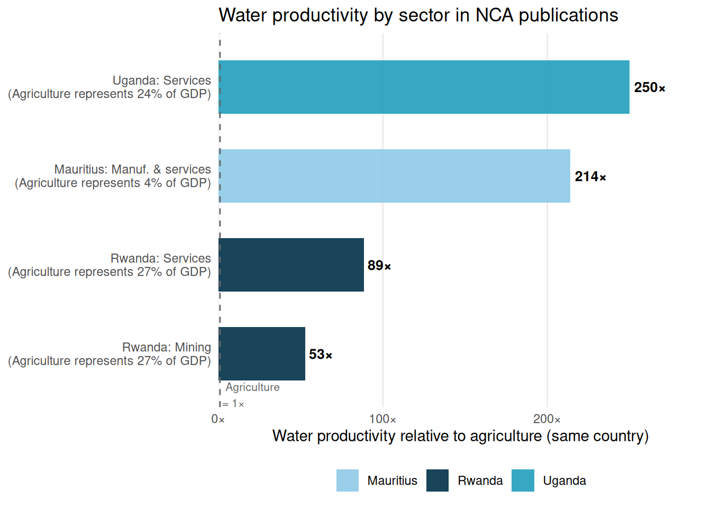
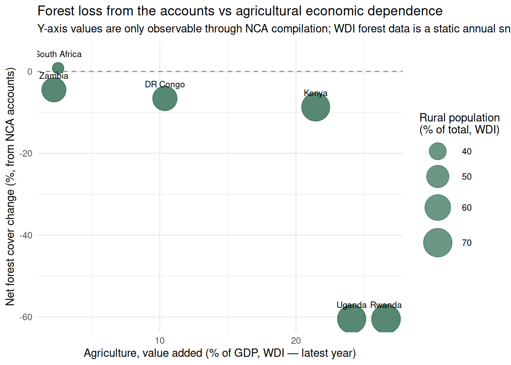
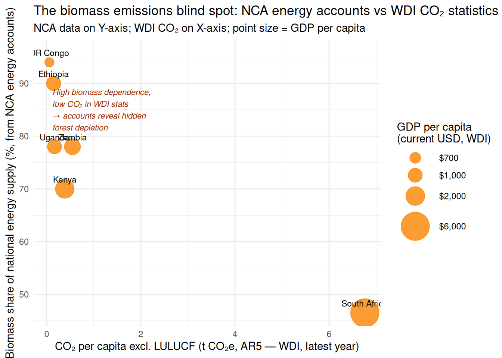

| Category | Account |
|---|---|
| Material flow | Material flow accounts |
| Economy wide material flow accounts | |
| Water | Physical supply and use tables for water |
| Monetary supply and use tables for water | |
| Physical asset accounts for water | |
| Water emission accounts | |
| Energy | Physical supply and use tables for energy |
| Monetary supply and use tables for energy | |
| Physical asset accounts for mineral and energy resources | |
| Monetary asset accounts for mineral and energy resources | |
| Air emissions | Air emission accounts |
| Land | Physical asset accounts for land |
| Monetary asset accounts for land | |
| Agriculture forestry and fisheries | Physical asset accounts for timber resources |
| Monetary asset accounts for timber resources | |
| Physical asset accounts for aquatic resources | |
| Monetary asset accounts for aquatic resources | |
| Asset accounts for other biological resources | |
| Other agriculture, forestry and fisheries accounts | |
| Waste | Waste accounts |
| Environmental protection and management expenditure | Environmental protection expenditure accounts |
| Resource management expenditure accounts | |
| Environmental goods and services accounts | |
| Taxes and subsidies | Environmental taxes accounts |
| Environmental subsidies accounts | |
| Ecosystem extent | Ecosystem extent accounts |
| Ecosystem condition | Ecosystem condition accounts |
| Ecosystem services | Physical ecosystem services accounts |
| Monetary ecosystem services accounts | |
| Ecosystem asset | Ecosystem asset accounts |
| Ocean | Ocean accounts |
| Species | Species accounts |
| Carbon | Carbon accounts |
| Urban | Urban accounts |
| Protected areas | Protected areas accounts |
| Forest | Forest accounts |
Natural Capital Accounts (NCAs) in Eastern and Southern Africa
Diagnostic Review, Analytical Findings, and Policy Applications
Executive Summary
Natural capital accounts (NCAs) compiled under the System of Environmental-Economic Accounting (SEEA) for Eastern and Southern Africa offer something that standard economic data cannot: a coherent, internationally comparable basis for linking each country’s resource wealth to its economic performance. A country with the same gross domestic product as a neighbour may be using its water far more efficiently, depleting its forests at twice the rate, or depending on rainfall patterns that a shifting climate will make unreliable. These differences are invisible in GDP. They are visible in the accounts reviewed here.
This report consolidates findings from a diagnostic review of SEEA implementation across the 26-country AFE region and an analytical assessment of the nine countries that have compiled accounts in any form: the Democratic Republic of Congo (DRC), Ethiopia, Kenya, Madagascar, Mauritius, Rwanda, South Africa, Uganda, and Zambia. It then examines how these countries have used their accounts to inform policy, investment decisions, and economic modelling, and concludes with recommendations for deepening and sustaining this work in a global context that is rapidly increasing demand for exactly this kind of data.
Regional implementation. Of the 26 AFE countries assessed, 11 are implementing the SEEA. Four are at Stage III (sustained institutional programmes), four at Stage II, and three at Stage I. Three additional countries are compiling accounts outside the formal SEEA framework. South Africa and Uganda lead with six and five compiled accounts respectively. Physical water accounts are the most common entry point, compiled by six countries.
Key quantitative findings. Across the nine reviewed countries, the accounts reveal a structurally coherent picture of natural capital stress. Woody biomass supplies 78 to 94 percent of national energy in the DRC, Uganda, and Zambia, a share that is driving forest loss across all three. Uganda’s forest cover fell 60 percent between 1990 and 2015; Zambia lost 1.9 million hectares of tree cover in just five years (2018–2023). Water productivity in agriculture is consistently the lowest of any sector: Rwanda’s agriculture achieves 118 Rwf per cubic metre against 6,236 Rwf/m³ for mining; Uganda’s agriculture earns UGX 1,458/m³ against UGX 364,299/m³ for services. Mauritius has lost two-thirds of treated potable water to distribution leaks before it reaches households.
Cross-country correlations with macroeconomic indicators. New analysis in this report pairs NCA data with World Development Indicators to place these findings in economic context. Forest cover change correlates positively with agricultural value added as a share of GDP, confirming that forest-to-cropland conversion tracks structural economic transformation but does not always improve food security per capita. Biomass energy dependency correlates inversely with GDP per capita, making clean cooking investment a precondition for energy transition rather than a development co-benefit. Countries with higher rural population shares show faster rates of natural land cover loss, reflecting smallholder frontier expansion.
Policy applications. The accounts have been applied to real decisions in several countries. In Kenya, NCA data underpin the KENMod macro-fiscal model, which is now used by the National Treasury to simulate the fiscal impact of drought, flooding, and infrastructure damage and to compute adjusted net savings. The model’s Land Use and Natural Capital Module draws directly on ecosystem service data from the accounts and is cited in the 2026 Budget Policy Statement. In Ethiopia, BELA ecosystem service modelling—grounded in the same biophysical accounts reviewed here—identified priority investment watersheds for the World Bank’s CALM PforR programme (US$900 million portfolio covering 8,000 community watersheds) and informed the Ethiopia Strategic Investment Framework for Sustainable Land Management. In Rwanda, the monetary water supply and use tables provided the quantitative case for water pricing reform. In South Africa, biodiversity tourism accounts underpinned the economic argument for protected area expansion.
Recommendations. Priority actions include completing monetary ecosystem service accounts in Ethiopia and Madagascar, expanding sub-national disaggregation for water and land accounts, institutionalizing compilation within national statistical plans, and developing cross-country harmonized accounts for shared river basins. Artificial intelligence offers concrete new tools for accelerating several of these priorities, including automated satellite-based land cover classification, AI-assisted report writing and gap imputation, and machine learning approaches to harmonizing cross-country classification schemes. The international statistical landscape now creates an urgency that was not present five years ago: the 2025 System of National Accounts, adopted by the UN Statistical Commission, incorporates natural resource depletion as a cost of production and the split-asset approach—both directly aligned with SEEA Central Framework methodology—meaning countries implementing SNA 2025 will require SEEA-compatible data systems. Additionally, the SEEA is the methodological basis for headline indicators under the Kunming-Montreal Global Biodiversity Framework, with reporting targets due by 2030.
Implementation and Status
The 2025 Global Assessment of SEEA Implementation provides the global context within which the AFE region’s progress is situated. It is supplemented here by an individual review of all 26 AFE countries to determine whether any form of natural capital accounting has been undertaken, regardless of formal SEEA status. This review examines whether each of 36 distinct SEEA accounts—spanning the SEEA Central Framework (CF), SEEA Ecosystem Accounts (EA), and Thematic Accounts—has been compiled at least once.
The AFE Assessment in Context
The system tracks 36 accounts grouped into three broad categories. The SEEA CF covers material and monetary flow and asset accounts for natural resources. The SEEA EA covers ecosystem extent, condition, services, and monetary asset accounts. Thematic Accounts address specialized areas including forests, oceans, and protected areas. Table 1 lists all accounts tracked in this review.
Implementation Status and Stages
Of the 26 AFE countries assessed, 11 are actively implementing the SEEA. The remaining 15 have not yet begun. Among those implementing, countries are classified by their stage of progress under SDG indicator 15.9.1(b), “Integration of biodiversity into national accounting and reporting systems, defined as implementation of the System of Environmental-Economic Accounting” (European Commission et al., 2013).
The stages are defined as follows. Stage I countries have compiled at least one SEEA CF account. Stage II countries have additionally compiled at least one SEEA EA or Thematic account. Stage III countries demonstrate a sustained institutional programme of accounting across multiple account types. In practice, a sustained programme means that at least two account types are compiled under a formally established institutional mandate, with a dedicated budget line or inter-agency data-sharing agreement in place to ensure continuity across government cycles—rather than relying exclusively on project-by-project donor financing. The distinction matters because the analytical value of NCA data grows with temporal depth: a single account produces a snapshot, while a maintained series produces the trends that economic planning actually requires.
Regular compilation and dissemination—referenced in Stage III criteria—means at minimum biennial production of accounts. More important than the frequency, however, is whether an institutional mechanism and a budget for replication are in place. Mauritius’s five-edition water account series and Uganda’s ten-iteration water account series both illustrate how a sustainable institutional arrangement—rather than technical sophistication alone—is what determines whether accounts persist.
In the AFE region, 3 countries are at Stage I, 4 at Stage II, and 4 at Stage III, indicating that while uptake remains modest, a meaningful cluster of countries has progressed beyond initial experimentation. Three additional countries—Rwanda, the Democratic Republic of Congo, and Madagascar—have accounts compiled through World Bank and international donor programmes but are not registered as formally implementing the SEEA in the UN classification. These are shown separately in Figure 1 as “Compiled (donor programme)” to distinguish them from countries with nationally institutionalized programmes. The accounts produced under these donor programmes are substantive and are fully reviewed in this report; the classification reflects their institutional status, not the quality or scope of the work.
The slow growth of formally registered implementation across the region reflects primarily resource and budget constraints, including the absence of dedicated funding lines within national statistical budgets and the limited technical staffing available for a task that requires sustained multi-agency coordination. It does not reflect a lack of country interest: in the 2023 Global Assessment, 77 percent of non-implementing countries indicated plans to begin implementation. The count of accounts identified in this review also diverges from UN-reported figures in two respects: Kenya and South Africa each have more accounts documented here than in official UN records—reflecting World Bank programme work not yet captured in the UN’s institutional classification cycle—while Mauritius, classified at Stage III by the UN, has documentation now available to this review following the recent publication of its fifth Water Account edition (Statistics Mauritius, December 2024).

Account Coverage
Across all 11 implementing countries, a total of 41 account-compilations have been recorded covering 19 distinct account types out of the 36 tracked. The most widely compiled accounts are the Physical Supply and Use Tables (PSUTs) for water, compiled by 6 countries, followed by PSUTs for Energy and Ecosystem Extent Accounts, each compiled by 5 countries, reflecting their relative accessibility as entry-level accounts and their relevance to the region’s resource management priorities. Physical asset accounts for land follow, compiled by 4 countries. Beyond this initial tier, account compilation remains constrained by data availability and institutional capacity: monetary accounts—which require price data, sector-level consumption surveys, and inter-agency coordination—and ecosystem accounts appear in only 1 to 3 countries each. Thematic accounts for forests and protected areas are at the same level. This pattern reflects capacity and resource limitations rather than absence of demand.

Table 2 provides an aggregate view of account group coverage.
| Account Group | Accounts tracked | Compilations recorded | Countries compiling at least one |
|---|---|---|---|
| SEEA Central Framework accounts | 25 | 29 | 12 |
| SEEA Ecosystem accounts | 5 | 19 | 8 |
| Thematic accounts | 6 | 2 | 2 |
Correlations with Macroeconomic Indicators
The analytical value of natural capital accounts increases substantially when account-derived indicators are placed alongside macroeconomic benchmarks. A water productivity ratio or a rate of forest cover change only constitutes a policy argument when it can be compared against economic performance, sectoral structure, or the picture that standard national statistics would otherwise present. The three comparisons in this section pair NCA-derived indicators — drawn from compiled water, forest, and energy accounts — with World Development Indicators to provide that context. In each figure, the NCA indicator is the primary variable; GDP, agricultural value added, and CO2 emissions per capita serve as the economic reference against which account findings are interpreted. All WDI data use the most recent available observation per country for the period 2010–2023; account reference periods vary by country and are noted in each figure caption.
Water Productivity and Economic Development

Water supply and use tables from Rwanda, Uganda, and Mauritius provide a direct measure of how efficiently different economic sectors convert water into economic value — something GDP statistics alone cannot reveal. The gaps are striking. In Uganda, the services sector generates 250 times more economic value per cubic metre than agriculture; in Mauritius, manufacturing and services generate 214 times more; in Rwanda, services generate 89 times more and mining 53 times more. These differences are not visible in GDP data, which records what each sector produces but not what it consumes from natural resources to produce it.
The pattern holds across countries at very different income levels and with different account methodologies. Rwanda and Uganda values come from compiled monetary water supply and use tables in national currency; Mauritius values are derived from WDI sector gross value added divided by physical water volumes recorded in the 2021–2022 Water Account (Statistics Mauritius, 5th edition, 2024). Despite these methodological differences, all three countries converge on the same finding: agriculture accounts for the overwhelming majority of water demand while generating the lowest return per cubic metre of any sector. In Mauritius, agriculture represents only 4 percent of GDP yet absorbs 302 of the 344 million cubic metres abstracted from the environment annually. This is the policy signal that water pricing reform, irrigation efficiency investment, and crop diversification programmes require — and it is only observable through water accounts.
Forest Cover Change and Agricultural Transformation

Placing forest cover change from the accounts against agricultural value added from WDI reveals a structurally consistent pattern: countries with higher agricultural GDP shares tend to show greater forest loss in their accounts. Uganda (agriculture 24% of GDP) and Rwanda (27%) each document approximately 60 percent net forest cover decline over their account periods, driven by smallholder cropland expansion. The DRC, with the lowest agricultural GDP share at 10 percent, still shows a 6.6 percent forest decline—reflecting artisanal fuelwood extraction rather than formal cropland conversion. Zambia presents a notable exception: agriculture accounts for only 2.2 percent of GDP, yet 59 percent of its population is rural and it lost 1.88 million hectares of tree cover in five years (2018–2023) through woodland-to-rangeland degradation. South Africa, with a low agricultural share and low rural population, shows near-zero forest change. The critical observation is that the Y-axis in this figure—net forest cover change over the account period—is entirely invisible in WDI data. The WDI forest area indicator provides an annual static snapshot; only compiled SEEA accounts provide the change rates and driving factors that make this comparison possible.
Biomass Energy Dependence and the Emissions Blind Spot

The accounts reveal a systematic paradox that WDI emissions statistics cannot: the countries most dependent on biomass for energy—DRC (94%), Ethiopia (90%), Uganda and Zambia (78%)—appear among the least carbon-intensive by conventional WDI CO2 statistics. From a standard emissions perspective, they look clean. From the energy accounts, they are depleting their forests. Uganda’s forest supply deficit reached 35 million tonnes by 2015 and is projected at 105 million tonnes by 2040 (Uganda Bureau of Statistics, 2020); the DRC’s fuelwood harvesting from forest-farm mosaics grew 709 percent between 2000 and 2020 (Turpie, Wilson, Brühl, et al., 2025). South Africa and Mauritius show the opposite: high CO2 per capita driven by coal and fossil fuels, low biomass dependency. This is the analytical story that only NCA data can tell: a country burning coal (high WDI CO2) and a country burning forests (low WDI CO2, high ecological cost) look completely different in the accounts but similarly misleading in GDP statistics alone. For the ASCENT clean energy program, this establishes that energy transition investments in biomass-dependent economies deliver a triple dividend—improved energy access, reduced forest depletion, and legitimate carbon reduction—a case that accounts, and only accounts, can quantify at country level.
Thematic Findings by Account Type
This section synthesizes findings across the nine reviewed countries, organized by account type (water, energy, land, ecosystem and forests). Within each type, countries are presented in alphabetical order. This section draws on the full text of published account reports, supplemented by the inventory of extractable tables and figures catalogued in the companion inventory document.
Water Accounts
Water accounts are the most widely compiled component of SEEA implementation in the AFE region and the most directly actionable for policy. Six countries have compiled physical supply and use tables for water, and Rwanda has produced monetary supply and use tables—the only such account in Africa—linking water flows to GDP through sector-level water productivity estimates.
Democratic Republic of Congo. No dedicated water accounts have been compiled for the DRC. The forest ecosystem accounts document that fuelwood dependency is a driver of the water-energy nexus, but direct water sector accounts remain a gap. The DRC is the second-largest country in Sub-Saharan Africa by freshwater endowment; its absence from regional water accounting is itself a data gap of significance.
Ethiopia. Ethiopia’s ecosystem services accounts provide physical evidence on hydrological services that water accounts would formalize. National water yield reached 347 billion m³ in 2022 (+0.9 percent since 2013), but dry-season baseflow fell 1.3 percent and flood mitigation capacity fell 2.7 percent, indicating that while total water volume was maintained, the natural buffering capacity of Ethiopia’s landscapes is weakening (Rutebuka et al., 2025). Southwest Ethiopia (5,039 m³/ha) and Benishangul-Gumuz (3,527 m³/ha) stand out as disproportionate contributors to dry-season water flows and represent high-priority zones for watershed investment. Addis Ababa records a negative flood mitigation value of −2,691 m³/ha because impervious urban surfaces amplify rather than attenuate peak flows.
Kenya. Kenya’s water accounts reveal that per capita water availability varies by a factor of eleven across basins, from 8 m³ per person per year in Lake Victoria South to 91 m³ in the Tana basin, against a national average of 26.6 m³ (World Bank & Prime Africa Consult, 2025). The Rift Valley shows groundwater abstraction exceeding 100 percent of sustainable yield—a direct policy signal for managed recharge or demand reduction. Electricity generation is the single largest sectoral water user, making the water-energy nexus a direct planning concern. Basin-level water accounts provide the baseline for linking ecosystem condition (sediment loads, dry-season flow) to the economic costs of infrastructure degradation: the Tana Basin’s Seven Forks hydropower cascade shows average reservoir sedimentation of approximately 1.45 percent per year. The sediment retention service protecting this infrastructure was valued at KSh 23,912 million per year in 2018 (Turpie, Wilson, Hickinbotham, et al., 2025). Non-revenue water declined modestly over the accounting period. The accounts include an initial step toward water quality accounts, documenting nutrient pollution, low dissolved oxygen, and high fluoride concentrations across basins, and proposing a SEEA water quality account structure for future compilation. [inventory item: KEN.water.1 about here] [inventory item: KEN.water.2 about here]
Madagascar. Madagascar has no water supply and use tables, but the ecosystem accounts document that the three main hydropower plants serving Antananarivo’s interconnected grid lose approximately 19 percent of generation capacity to watershed degradation (Vogl et al., 2022). Total annual sediment exported to waterways was 27.2 million tonnes per year under the 2020 baseline, with top-priority NBS investment zones contributing 9.7 million tonnes per year. These physical flows provide the foundation for a water account structure that would quantify the economic case for catchment investment.
Mauritius. Mauritius maintains the most institutionalized water accounting programme in the region—its fifth consecutive edition. Total freshwater abstraction is 22 percent of total renewable water resources, below the 25 percent stress threshold, but agriculture accounts for 89.1 percent of net water consumption and the trend is worsening (Statistics Mauritius, 2024). The most policy-significant finding is the rate of unaccounted-for water (UFW) in the Central Water Authority (CWA) network: 64.6 percent in 2022, up from 56.4 percent in 2013. Nearly two-thirds of all treated potable water abstracted by the utility is lost before reaching end users. The reason is deteriorating distribution infrastructure: households received only 197 litres per capita per day in 2022 despite 99.8 percent access to safely managed drinking water services, because the abstraction-to-delivery gap of 719 L/day vs 197 L/day is almost entirely explained by pipe network losses. A monetary water account that quantified the treatment cost, pumping energy, and foregone revenue of UFW would provide a direct economic argument for infrastructure investment. [inventory item: MUS.water.3 about here]
Rwanda. Rwanda’s monetary water supply and use tables are one of only two such accounts in Africa and provide the most direct link between water use and economic productivity available in the region (Government of Rwanda, 2019b). Agriculture consumes over 96 percent of freshwater abstraction but achieves water productivity of only 118 Rwf/m³, against 523 Rwf/m³ for manufacturing, 6,236 Rwf/m³ for mining, and 9,300–11,600 Rwf/m³ for services. Rwanda’s GDP grew 25 percent between 2012 and 2015 while total water use grew only 10 percent—a relative decoupling signal that is invisible in standard national accounts. This productivity ratio data, comparable with Uganda’s accounts (see below), provides the quantified basis for water pricing reform, investment in irrigated agriculture, and the case for water allocation governance. WASAC’s non-revenue water at 41 percent represents USD 8.7 million in annual foregone revenue. Reservoir sedimentation grew 123 percent between 1990 and 2015, with 39 percent growth in just 2010–2015, directly linking catchment ecosystem degradation to infrastructure maintenance costs. [inventory item: RWA.water.1 about here] [inventory item: RWA.water.2 about here]
South Africa. South Africa’s water accounts focus on Strategic Water Source Areas (SWSAs)—the mountain and highland catchments that cover only 8.2 percent of national land but supply approximately two-thirds of national economic activity and more than 90 percent of urban water users (Statistics South Africa, 2023). This finding exemplifies how the management of water resources is not uniform across the country but determined by the specific watersheds where economic activity is concentrated. Three SWSAs have already fallen below the 60 percent natural land cover threshold considered necessary for functional water production: Upper Usutu (40.9 percent natural), Table Mountain (50.4 percent), and Mpumalanga Drakensberg (51.3 percent). These catchments regulate water for Gauteng, South Africa’s economic core. The accounts document that commercially irrigated pivots expanded 221 percent nationally between 1990 and 2014, with the largest expansion in the water-scarce Free State (+489.7 percent), creating acute demand growth in the catchments least able to absorb it. [inventory item: ZAF.water.1 about here] [inventory item: ZAF.water.3 about here]
Uganda. Uganda’s water accounts confirm that national water productivity reached UGX 5,557 per m³ consumed in 2024—84 percent above the 2015 baseline—but that agriculture (UGX 1,458/m³) remains more than 250 times less productive per cubic metre than the services sector (UGX 364,299/m³) (Uganda Bureau of Statistics, 2025). This gap does not argue against agricultural water use; it provides the quantified basis for designing water allocation reforms and pricing policy. Rainfed agriculture accounts for 56 percent of total abstraction, while irrigated land represents only 0.5 percent of agronomic potential—one of the lowest irrigation uptake rates regionally. An emerging pressure point is crude oil and mining abstraction, which grew 113.9 percent year-on-year in 2024 (from 164,676 to 352,188 thousand m³), evidencing the emerging water demands of Uganda’s oil development program. Distribution losses in the supply network are 34.8 percent, and per-household daily consumption of 27 litres is well below the 50-litre basic-needs benchmark. [inventory item: UGA.water.3 about here]
Zambia. Zambia’s water accounts situate water not only as a production input but as a source of macroeconomic vulnerability (Chisanga et al., 2026). Hydropower at Lake Kariba, Kafue Gorge, and Itezhi-Tezhi underpins national electricity supply, while agriculture is the largest consumptive user. Lake Kariba fell below 15 percent of capacity in both 2016 and 2024, triggering nationwide load-shedding, while the 2023/24 El Niño drought simultaneously destroyed the maize harvest and crippled hydropower generation. Bangweulu wetlands alone generate an estimated USD 11.7 million per year in ecosystem services and support approximately 490 freshwater fish species including 138 endemics in Lake Tanganyika. The accounts acknowledge that a fully SEEA-Water-compliant national account has not yet been institutionalized, with monitoring networks remaining sparse and groundwater abstraction largely unmetered.
Energy Accounts
Energy accounts remain the least compiled component in the AFE review, but where they exist they reveal a structural tension between physical and monetary energy realities that is directly relevant to the energy transition.
Democratic Republic of Congo. The DRC’s forest ecosystem accounts establish that 94 percent of the country’s total energy supply comes from forest biomass (Turpie, Wilson, Brühl, et al., 2025). Fuelwood harvesting from forest-farm mosaics increased 709 percent between 2000 and 2020 as the agricultural frontier expanded. Only approximately 10 percent of the population has reliable electricity access. For the ASCENT program, this creates a dual entry point: clean cooking programs can simultaneously address household energy access and reduce a primary driver of forest degradation. Carbon finance mechanisms under Article 6 of the Paris Agreement represent an additional revenue stream, given that DRC forests store approximately 204,000 million tonnes of CO₂ equivalent.
Ethiopia. Ethiopia does not yet have compiled energy supply and use tables. The ecosystem accounts document that over 90 percent of Ethiopian households rely on wood as their primary energy source, representing a large but unmeasured contribution to household energy demand (Rutebuka et al., 2025). A future energy supply and use table would provide the physical baseline needed to design ASCENT interventions and monitor their impact on biomass demand. Ethiopia’s participation in carbon markets under Article 6, explicitly noted in the land accounts, could generate revenue to offset the cost of energy transition programs.
Kenya. Kenya’s monetary energy supply and use table (MSUT)—the first in the AFE region—provides a model for the kind of account most directly relevant to ASCENT planning (Kenya National Bureau of Statistics, 2026a; World Bank & Prime Africa Consult, 2025). The physical accounts confirm heavy reliance on renewable sources for grid electricity (geothermal 19,984 TJ, hydropower 13,071 TJ, wind 6,472 TJ), but biomass dwarfs all grid sources in the overall physical energy balance, with firewood and charcoal accounting for more than 1.2 million TJ of household energy use. The monetary accounts reveal a structurally different picture: total monetary supply was KES 580.5 billion, with household monetary energy spending at KES 749.8 billion concentrated on electricity and petroleum products rather than biomass, which is essentially unpriced in market terms. This divergence between physical and monetary accounts is policy-critical: subsidies, taxes, and tariffs are calibrated to a monetized minority of total energy use while the majority (rural biomass) remains outside the fiscal system. [inventory item: KEN.energy.1 about here] [inventory item: KEN.energy.2 about here]
South Africa. South Africa’s physical energy flow accounts—the most detailed in the region—document that coal accounts for 72.2 percent of domestic natural energy inputs while oil import dependency reached 93.1 percent and natural gas 99.9 percent following the closure of domestic refineries (Statistics South Africa, 2025). Despite coal self-sufficiency, overall import dependency rose from 17.5 to 19.9 percent between 2015 and 2022. Household biofuels account for 46.5 percent of residential energy—a share comparable to Uganda’s urban bioenergy share, indicating substantial energy poverty coexisting with a modern industrial economy. Mining consumes 1.21 TJ per million Rand of GVA, the highest energy intensity among all sectors. [inventory item: ZAF.energy.1 about here] [inventory item: ZAF.energy.2 about here]
Uganda. Uganda’s forest accounts establish that woody biomass supplies 78 percent of national energy (Uganda Bureau of Statistics, 2020). Charcoal production grew fivefold between 1990 and 2015, consuming approximately 95.7 million tonnes of wood per year at a kiln efficiency of only 12.5 percent. The accounts projected in 2020 that sustainable wood supply would be fully depleted by approximately 2025 under business-as-usual conditions—a projection now overdue for verification. Updated land cover and forest productivity data for the post-2020 period would allow assessment of whether this threshold was reached, whether it was due to the way accounts measured sustainable yield, or whether policy interventions or changed demand patterns altered the trajectory. For ASCENT, Uganda’s charcoal-driven deforestation trajectory represents one of the clearest cases where clean cooking scale-up would generate co-benefits across energy access, forest conservation, and climate.
Zambia. Zambia’s accounts document that charcoal and fuelwood account for 78 percent of total national energy consumed, with unlicensed charcoal extraction vastly exceeding licensed production (Chisanga et al., 2026). The 2023/24 drought illustrated a double vulnerability: Lake Kariba fell below 15 percent of capacity, triggering electricity imports, while simultaneously the maize harvest failed. Solar and clean cooking solutions address both exposure pathways—this dual-benefit case is demonstrable from the accounts but would be strengthened considerably by a compiled energy supply and use table.
Land Accounts
Land accounts are the most universal entry point into SEEA implementation, because every country in this review has compiled at least one form of land cover or land use change account.
Democratic Republic of Congo. The DRC’s ecosystem extent accounts use a 15-class typology documenting forest and land cover change from 2000 to 2020. Total forest cover lost was 11.6 million hectares, with the annual deforestation rate more than doubling from approximately 0.5 percent per year in 2000–2010 to above 0.8 percent per year in 2010–2020. The most revealing dynamic is the 259 percent expansion of forest-farm mosaic—degraded, mixed-use agricultural-forest landscapes—from 2.8 million to 9.97 million hectares, alongside cropland growing 147 percent (Turpie, Wilson, Brühl, et al., 2025). At the provincial level, Kwilu suffered the largest absolute lowland forest loss (720,000 ha), while Kinshasa province lost 67 percent of its forest cover, documenting that proximity to population centers drives distinct deforestation patterns compared to remote interior dynamics. [inventory item: DRC.forest.1 about here]
Ethiopia. Ethiopia’s land asset accounts document cropland growing 20 percent (21.7 to 25.9 million hectares) and built-up area growing 50 percent between 2013 and 2022, while open shrublands declined 23 percent (Federal Democratic Republic of Ethiopia, 2026). Total forest cover increased 22 percent (22.3 to 27.2 million hectares), but the report cautions explicitly that differences in data sources, forest definitions, and canopy cover sensitivity to rainfall make it difficult to apportion change between genuine ecological recovery and reclassification. This methodological note is essential context for any cross-country comparison of forest trends. Land degradation is estimated to reduce Ethiopia’s agricultural GDP by 2 to 6.75 percent annually—a foregone value of USD 1–3 billion per year based on 2022 sector size—providing the motivation for completing a monetary land asset account. [inventory item: ETH.land.1 about here] [inventory item: ETH.land.2 about here]
Kenya. Kenya’s land accounts, covering 1990–2024, show forest cover declining from 6.65 to 6.07 percent, a net loss of 342,793 hectares (Soulard, 2025). Annual cropland grew approximately 1.4 million hectares (+29.5 percent) between 2002 and 2018, and all natural terrestrial ecosystem types declined. The land accounts provide a spatial backbone for county-level disaggregation and map conversion flows that enable identification of where interventions—restoration, conservation employment, zoning changes—would be most effective in reversing degradation rather than simply documenting where degradation is occurring. This distinction is important: the accounts answer both questions simultaneously, but they serve different planning purposes. [inventory item: KEN.land.1 about here]
Madagascar. Madagascar’s degradation index shows that 35.6 percent of national territory (21.1 million hectares) experienced degrading trends over 29 years, with 12.5 percent highly degrading (Vogl et al., 2022). At 7.5 percent of national territory, the highest-priority NBS investment zones contain 31 percent of total national carbon stock—an extreme geographic concentration of natural capital value that is highly relevant to both climate finance and watershed protection investment.
Rwanda. Rwanda’s land accounts present the sharpest documented land transition in the region: cropland rose from 24.2 to 51.7 percent of national territory between 1990 and 2015, while sparse forest lost 673,137 hectares and average farm parcels shrank to 0.184 hectares (Government of Rwanda, 2018). This land fragmentation threshold limits mechanization and structural transformation. During the same period—as cropland expanded—Rwanda’s GDP grew substantially and poverty fell, documenting the difficult trade-off between forest protection and rural economic development that the accounts make explicit. Soil erosion costs have been estimated at USD 34 million per year (approximately 2 percent of GDP). [inventory item: RWA.land.1 about here]
South Africa. South Africa’s land accounts occupy the most technically advanced position in the region, combining ecosystem extent indices, classification hierarchies, and turnover metrics over three decades (Statistics South Africa, 2020). While natural land nationally increased marginally (+0.8 percent, 1990–2014), commercially irrigated pivots expanded 221 percent, the mine footprint grew 15.9 percent in area, and 18 percent of South Africa’s 458 nationally defined ecosystem types have already fallen at or below the 60 percent natural cover threshold associated with ecosystem dysfunction. Informal settlements doubled in extent (+95.7 percent), and KwaZulu-Natal is the only province with net loss of natural area (−178,241 ha). [inventory item: ZAF.land.1 about here] [inventory item: ZAF.land.2 about here]
Zambia. Zambia’s five-year accounts (2018–2023) show tree cover falling from 55.4 to 52.8 percent of national territory—a loss of 1.88 million hectares, equivalent to 376,000 ha per year (Chisanga et al., 2026). The dominant conversion is trees to rangeland (4.9 million ha), reflecting miombo woodland degradation rather than direct agricultural conversion. The provincial degradation index (NEDI) reveals Eastern Province (5.25 percent) degrading at nearly four times the national average (1.44 percent), with conversion patterns that differ fundamentally from the more stable North-Western Province (NEDI = 0.12 percent). Zambia’s accounts also include a methodological note that merits attention: the ecosystem extent accounts use MODIS satellite data with classification boundaries that differ from national land cover data, meaning some biome totals appear to exceed expected national territory extents. The accounts interpret percentage changes as more reliable than absolute areas—a transparency worth preserving in cross-country comparisons. [inventory item: ZMB.land.1 about here] [inventory item: ZMB.land.3 about here]
Ecosystem and Forest Accounts
Democratic Republic of Congo. The DRC’s forest ecosystem accounts are the most comprehensive in the region for any single ecosystem type. Total annual monetary supply of forest ecosystem services reached CDF 1,991,451 billion (USD 706,188 million) in 2020, dominated by global climate regulation at the social cost of carbon (Turpie, Wilson, Brühl, et al., 2025). Excluding this carbon externality, the domestically captured value was USD 3.3 billion per year—consisting of timber, wild resources, sediment retention, and tourism. The gap between global value (USD 706 billion) and domestically captured value (USD 3.3 billion) is the economic explanation for continued deforestation: DRC bears the full cost of forest protection while the majority of the benefit accrues globally. Forest depletion costs grew 113 percent between 2010 and 2020, indicating that nominal asset growth—total forest value increased from USD 5.4 trillion (2000) to USD 10.3 trillion (2020)—masks accelerating unsustainable extraction. For policy relevance, the focus should be on the per-capita sustainability trajectory rather than nominal totals: per-capita forest wealth declined as population growth outpaced sustainable forest income, and depletion accelerated. Bushmeat extraction at 64 percent above sustainable yield is both an ecological risk and a livelihood vulnerability, with bushmeat income representing approximately 32 percent of annual household income in some forest-dependent communities. [inventory item: DRC.forest.3 about here] [inventory item: DRC.forest.4 about here]
Ethiopia. Ethiopia’s ecosystem services accounts cover soil protection, water regulation, baseflow, flood mitigation, water yield, carbon sequestration, and carbon stock—all in physical units, with monetary valuation explicitly deferred (Rutebuka et al., 2025). Ecosystems avoided 29.7 billion tonnes of soil erosion in 2022, but the service delivered per hectare of cropland fell 18 percent (from 411 to 338 t/ha), showing that landscape conversion is reducing protective ecosystem cover even as agricultural area expands. The Abbay basin accounts for over 40 percent of national soil protection value. Carbon sequestration of forests and croplands is being eroded by continued conversion of shrublands: open shrubland alone emitted 194.8 million tonnes C per year nationally. [inventory item: ETH.ecosystem.1 about here] [inventory item: ETH.ecosystem.2 about here]
Kenya. Kenya’s monetary ecosystem service accounts are the most policy-relevant in the AFE region, covering livestock production (provisioning), sediment retention (regulating), and ecosystem-based tourism (cultural) for 2002 and 2018 (Turpie, Wilson, Hickinbotham, et al., 2025). Total services reached KSh 247 billion per year in 2018 (1.8 percent of GDP). The decline in the ecosystem service share of GDP—from 2.8 percent in 2002—reflects Kenya’s GDP growing faster than measured ecosystem service flows, not declining natural capital value; it primarily reflects accounts not yet compiled (carbon, fuelwood, pollination, water regulation). Wildlife populations declined from 31.9 percent of their 1977–1980 baseline levels to 27.3 percent by 2018 and are projected below 10 percent by 2050 under business-as-usual—a trajectory that would directly erode the tourism asset value currently captured in the accounts. Across the region, the most consistently missing ecosystem services in monetary terms are pollination (absent everywhere), freshwater provisioning to households (unpriced throughout), flood damage avoided (proposed but not compiled), and the contribution of forests to agricultural production through rainfall maintenance and soil protection. The reason these remain missing is a combination of data requirements (household water use surveys, detailed spatial flood records), institutional capacity (specialized valuation expertise not yet embedded in national statistical offices), and methodological complexity (non-market valuation requires explicit modeling assumptions about reference states and counterfactuals). [inventory item: KEN.ecosystem.2 about here] [inventory item: KEN.ecosystem.4 about here]
Madagascar. Madagascar’s accounts document that 35.6 percent of territory is degrading, with 1.96 billion tonnes of carbon (31 percent of national total) concentrated in the highest-priority NBS zones, which represent only 7.5 percent of national territory (Vogl et al., 2022). At indicative social cost of carbon values, the annual carbon absorption loss from land degradation reaches approximately USD 59 million per year. No monetary ecosystem service accounts have been compiled; the economic analysis of hydropower losses and agricultural productivity costs was computed in a companion assessment but has not been formally published as part of the accounts.
Rwanda. Rwanda’s ecosystem accounts track soil erosion increasing 54 percent between 1990 and 2015, sediment export increasing 123 percent, and quickflow (surface runoff) increasing 35 percent, while baseflow (dry-season flow) declined 11 percent nationally and 29–32 percent in peri-urban Kigali districts (Government of Rwanda, 2019a). These trends, driven by cropland expansion from the land accounts, close the feedback loop between land use change and water supply security. Soil erosion costs are estimated at USD 34 million per year. [inventory item: RWA.ecosystem.1 about here] [inventory item: RWA.ecosystem.3 about here]
South Africa. South Africa’s biodiversity tourism accounts—the only fully compiled monetary ecosystem services accounts in the AFE region outside Kenya—show total biodiversity-based tourism generating R60,663 million in spending in 2019, with direct employment of 91,836 jobs (Statistics South Africa, 2024). Protected area expanded from 7.3 to 9.2 percent of national territory between 2000 and 2020, and marine protected areas grew from 4,748 to 57,943 km². The estuarine accounts document severe degradation: only 4 percent of estuaries in good fish condition, sawfish now extinct, dusky kob spawner biomass below 2 percent of pristine levels, with 70–94 percent of nursery habitats under high or very high fishing pressure (Niekerk et al., 2020). [inventory item: ZAF.biodiversity.1 about here] [inventory item: ZAF.estuary.2 about here]
Uganda. Uganda’s monetary forest asset accounts provide the most detailed forest sector data in the region after the DRC (Uganda Bureau of Statistics, 2020). Total forest land value was USD 34.9 billion in 2015, despite a 60 percent loss in forest area since 1990—reflecting rapid escalation in per-hectare land values especially in the Central region (USD 129,700/ha). Non-wood forest products including Prunus africana bark (UGX 265,195 million) and shea butter (UGX 14,553 million) provide significant additional economic values. The 2020 accounts projected sustainable wood supply fully depleted by approximately 2025 under business-as-usual conditions. This projection now warrants explicit verification: has the expected depletion occurred, and if not, did policy interventions, demand changes, or accounting assumptions explain the deviation? This retrospective analysis—checking whether the account’s own projection materialized—is precisely the kind of learning that validates and builds the credibility of NCA programmes. [inventory item: UGA.forest.1 about here] [inventory item: UGA.forest.4 about here] [inventory item: UGA.forest.5 about here]
Zambia. Zambia’s wildlife and fisheries accounts establish the economic contribution of natural resources to an economy where approximately 40 percent of national income is estimated to derive from natural capital (Chisanga et al., 2026). Fish production increased 42.4 percent between 2018 and 2023, with aquaculture growing 112.2 percent. Bush meat revenue from Game Management Areas grew 158.5 percent in nominal terms, reflecting both kwacha depreciation and genuine volume growth. The net present value of carbon stock loss due to ecosystem degradation between 2018 and 2023 was estimated at USD 46 million—the only monetary ecosystem services estimate available for Zambia, and a direct entry point for carbon finance discussions. [inventory item: ZMB.wildlife.1 about here] [inventory item: ZMB.ecosystem.1 about here]
Common Data Gaps and Systemic Patterns
Across the reviewed accounts, data gaps follow recurring patterns that reflect structural challenges common to statistical systems in the region.
Data infrastructure and monitoring. Primary measurement infrastructure for SEEA inputs remains underdeveloped. Zambia’s water accounts acknowledge that groundwater abstraction is “largely unmetered” and monitoring networks “remain sparse.” Rwanda’s monitoring network was designed for far lower abstraction rates than the tenfold demand increase projected by 2040. DRC poverty and inequality data are over a decade old, preventing adjusted net savings calculations for some years.
Classification and cross-country comparability. The forest cover data illustrate the classification problem. Ethiopia’s observed 22 percent forest cover gain may partly reflect reclassification rather than genuine restoration—the accounts themselves state this explicitly. Zambia’s MODIS-based ecosystem extent accounts use classification boundaries that differ from national land cover data. The DRC uses 15 ecosystem classes while most peer countries use simpler schemes. Harmonizing common reporting categories alongside national definitions would substantially improve cross-country analytical value.
Monetary valuation gaps. The absence of monetary ecosystem service accounts remains the most consequential gap for the policy applications NCA programmes are designed to support. Ethiopia, Madagascar, and most countries in the region have physical accounts only. Monetary accounts are what enable direct comparison with GDP, infrastructure costs, and fiscal revenue—the language of economic planning.
Spatial disaggregation. National-level aggregates systematically mask localized pressures. Kenya’s tenfold range in basin-level per-capita water availability, Zambia’s fourfold difference in provincial degradation rates, and Rwanda’s district-level baseflow declines of up to 32 percent are all invisible in national statistics. Sub-national disaggregation transforms national accounts into investment targeting tools.
Institutionalization. The most persistent structural challenge is the transition from one-off project-funded accounts to permanent, budgeted statistical products. Mauritius (fifth water account edition) and Uganda (tenth water account iteration) demonstrate that institutionalization depends less on technical capacity than on formal inter-agency data-sharing agreements, clear mandates within national statistical plans, and budget lines independent of donor project cycles.
Applications of Natural Capital Accounts
The accounts reviewed above are not produced for their own sake. Their value lies in whether they inform investment decisions, policy design, and economic planning. This section synthesizes documented applications—cases where account data has demonstrably entered planning or program design processes—across the nine reviewed countries.
Overview
The pattern of application varies by country and account type. The most advanced cases involve direct integration of NCA data into macro-fiscal models (Kenya) and investment targeting tools (Ethiopia). Other countries demonstrate application through specific policy citations, pricing reform arguments (Rwanda), or conservation investment justifications (South Africa, Uganda). The common thread is that data utility is highest where an institutional channel connects account compilers with planning and budget decision-makers—either through a formal model, a national plan, or a specific program in preparation.
Ethiopia: Investment Prioritization and the CALM Program
Ethiopia’s natural capital accounting work directly informed two major policy processes, both rooted in the biophysical ecosystem services accounts reviewed above.
The World Bank’s BELA initiative developed an Investment Prioritization Tool (IPT) for Ethiopia using the ecosystem services modelling that underpins the accounts reviewed in Section 4 (World Bank BELA Initiative, 2026). The tool measures soil protection, water regulation, and carbon storage services and identifies priority watersheds for investment based on the greatest potential to improve ecosystem services. A Technical Working Group, co-chaired by the Ministry of Agriculture, was established to co-develop the IPT and build national capacity for its use.
The analysis identified that while Government investments in the highlands had effectively reversed some degradation trends, additional degradation hotspots were emerging in lowland areas. This geographic shift in priorities was incorporated as a key recommendation in the Ethiopia Country Climate and Development Report (CCDR) and subsequently informed the World Bank’s Climate Action through Landscape Management (CALM) Programme for Results (PforR). CALM operates across a portfolio of approximately USD 900 million covering 8,000 community watersheds nationwide. The IPT’s geographically explicit analysis—identifying which watersheds would yield the greatest improvement per dollar invested—directly informed the selection of CALM’s investment areas.
The IPT and associated analysis also provides the analytical foundation for Ethiopia’s Strategic Investment Framework for Sustainable Land Management (ESIF-II), which will guide government-financed programs on sustainable land management.
Under a business-as-usual scenario, erosion and sedimentation are projected to rise by more than 26 percent in numerous regions of Ethiopia. The Adaptation scenario—which directs investments toward areas with the highest potential to enhance ecosystem services, including erosion control, water regulation, and carbon sequestration—projects conversion and restoration of approximately 6.7 million hectares by 2030 and 23.8 million hectares by 2050. The Resilient Scenario projects carbon stocks increasing by 389 million metric tonnes by 2050, with a carbon market potential estimated at approximately USD 130 million, providing a potential financing stream for land restoration programs.
The ecosystem accounts’ specific finding that Southwest Ethiopia and Benishangul-Gumuz are disproportionate contributors to dry-season water flows illustrates the type of watershed investment justification that the accounts make possible. These regions had been identified in the accounts as high-priority zones for water security investment; the question of whether the accounts directly informed Bank engagement in these areas is one that warrants confirmation with the GPS teams involved—and is precisely the type of documentation that should be maintained in institutional records as the programs proceed.
Kenya: Natural Capital Data in the Macro-Fiscal Framework
Kenya’s use of natural capital accounts in fiscal planning is the most advanced documented case in the AFE region, as formally recognized in the 2026 Budget Policy Statement of the National Treasury (National Treasury of Kenya, 2026).
The World Bank, working with the National Treasury through technical assistance, supported development of a customized macroeconomic model for Kenya known as KENMod. This is an extension of the World Bank’s standard Macro-Fiscal Model (MFMod)—a structural macroeconometric model used across client countries for GDP, consumption, investment, employment, and fiscal forecasting—customized to incorporate a Climate and Natural Capital Extension. Technical capacity was built among officers from the National Treasury, the State Department of Planning, and the Kenya National Bureau of Statistics.
KENMod’s Climate and Natural Capital Extension comprises four interlinked analytical channels: (a) a Climate Damages Module covering labor heat stress, human health, water and heat stress, erosion and land degradation, livestock, flooding, and roads and bridges; (b) a Reconstruction and Adaptation Module analyzing investment costs and benefits in reducing climate damages; (c) an Energy, Emissions, and Pollution Module that includes energy as a production factor, assesses carbon pricing impacts, and tracks CO₂ and PM 2.5 emissions; and (d) a Land Use and Natural Capital Module that models land allocation using ecosystem service-adjusted land prices and computes Adjusted Net Savings—capturing resource depletion. Data from the NCA programme, including water accounts, energy accounts, land accounts, and ecosystem service accounts, directly feed into channels (a) and (d).
The 2026 BPS reports that four climate-related scenarios were simulated using KENMod: a 10 percent reduction in crop yields from drought; a 20 percent decline in livestock output; flood-related road and bridge damage equivalent to 2 percent of public capital stock; and a combined scenario of all three shocks. The analysis shows that climate shocks reduce GDP, widen the primary deficit, and increase debt-to-GDP ratios—findings used to justify climate-responsive budgeting and investment in climate-resilient infrastructure. Under a hot scenario, GDP is projected 4.2 percentage points lower than baseline by 2100.
The BPS also documents progress in NCA institutionalization: advances in Ecosystem, Energy, Forest, and Water Accounts with the natural capital dataset extending to 2023; development of an Investment Prioritization Tool for land restoration; and establishment of a National Plan for the Advancement of Environmental-Economic Accounting with discussions underway on a National Steering Committee for NCA integration into national planning.
Kenya’s forest accounts note separately that the KENMOD framework enables forest-related scenarios—including climate shocks to forest extent and macroeconomic impacts of forest restoration investments—to be translated directly into GDP, fiscal revenue, and employment projections (Kenya National Bureau of Statistics, 2026b). This link makes Kenya the only country in the AFE region with an operational tool for making budget-level arguments for forest conservation directly comparable to those of any other economic sector.
Rwanda: Water Pricing and Infrastructure Investment
Rwanda’s monetary water supply and use tables provide the most direct link between water accounts and a specific policy argument in the region: the quantified economic case for water tariff reform and distribution infrastructure investment. The accounts establish that WASAC achieves only 75 percent cost recovery, with a break-even tariff of approximately 700 Rwf/m³ against actual residential charges of 340–877 Rwf/m³ (Government of Rwanda, 2019b). Non-revenue water at 41 percent represents USD 8.7 million in annual foregone revenue. Halving NRW would free 8 million m³ per year—equivalent to supply for 42,000 households or irrigation for 660 additional hectares—and add approximately USD 4 million in annual revenue.
The monetary water productivity data—showing agriculture at 118 Rwf/m³ against mining at 6,236 Rwf/m³—provides the macro-economic basis for water allocation governance that physical accounts alone cannot support. Rwanda’s relative decoupling (GDP +25 percent, water use +10 percent, 2012–2015) is the type of macroeconomic efficiency argument that informs both domestic water policy and donor investment rationale.
South Africa: Biodiversity Economy and Conservation Finance
South Africa’s biodiversity tourism accounts have contributed to the quantified economic case for protected area expansion, which grew from 7.3 to 9.2 percent of mainland area between 2000 and 2020 (Statistics South Africa, 2021). The monetary finding that biodiversity-based tourism generated R27.7 billion in GDP (0.4–0.5 percent) and supported 91,836 direct jobs in 2019 provides an economic argument for conservation investment that is directly comparable to other sectors’ contributions to GDP and employment (Statistics South Africa, 2024). The SWSA water accounts document which specific catchments have fallen below ecological function thresholds, enabling geographically targeted conservation spending rather than blanket national programs.
Uganda: Forest Supply Projections
Uganda’s forest accounts include the region’s most explicit forward-looking projections: sustainable wood supply fully depleted by approximately 2025, with a supply deficit of 105 million tonnes projected by 2040 (Uganda Bureau of Statistics, 2020). This projection was explicitly intended to inform Uganda’s energy policy and ASCENT-type clean cooking investments. The non-wood forest product monetary accounts—Prunus africana bark at UGX 265,195 million and shea butter at UGX 14,553 million—provide the value-chain data needed to design formalization programs for high-value species that generate both livelihoods and conservation incentives.
Zambia: Wildlife Revenue and Climate Vulnerability
Zambia’s accounts establish the economic scale of wildlife-based provisioning: fish production valued at ZMW 8 billion (USD 422.6 million) in 2023, bush meat revenue growing 158.5 percent (2018–2023), and non-wood forest product harvests of over 300,000 tonnes per year (Chisanga et al., 2026). These figures, compiled within the formal SEEA framework for the first time, provide the baseline for wildlife sector investment decisions and for monitoring the economic resilience of communities that depend on Game Management Areas. The carbon NPV of USD 46 million for 2018–2023 ecosystem degradation provides a carbon finance entry point even in the absence of full monetary ecosystem accounts.
Recommendations
Completing the Monetary Frontier
Prioritize monetary ecosystem service accounts for Ethiopia and Madagascar. Both countries have comprehensive physical frameworks in place. Carbon sequestration valuation (using Article 6 carbon market prices) and water regulation services (using avoided cost methodologies) have the most established pathways and the highest policy demand. Ethiopia’s soil protection data, linked to the 2–6.75 percent agricultural GDP damage estimate, provides an immediate physical basis for a cost-benefit account. Madagascar’s NBS investment zones concentrate 31 percent of national carbon stock in 7.5 percent of national territory—a spatial concentration that would generate very large monetary values per hectare once properly monetized.
Support energy supply and use table development in Ethiopia, the DRC, and Uganda. Physical energy accounts are the minimum baseline for ASCENT program monitoring. Monetary energy supply and use tables—as developed in Kenya—provide the most policy-actionable insights, linking physical energy flows to sectoral value added, household expenditure, and fiscal revenue. The DRC’s biomass-to-carbon finance linkage and Uganda’s 2025 wood supply depletion projection both require updated physical accounts to verify outcomes.
Institutionalizing Accounts
Invest in sub-national disaggregation for water and land accounts. Basin-level and district-level accounts already exist in prototype form in several countries. Kenya’s ten water basins, Zambia’s provincial NEDI, Rwanda’s district-level baseflow decline, and South Africa’s 22 SWSA analyses demonstrate that sub-national disaggregation transforms national accounts into investment targeting tools. Systematic spatial disaggregation should be built into account design from the start rather than treated as a future elaboration.
Institutionalize NCA within national statistical agencies. The DRC, Ethiopia, and Zambia explicitly identify institutionalization as a priority. Technical assistance for placing SEEA compilation within the mandate and budget of national statistical offices—following the Mauritius and Uganda water account models—is the single most important intervention for ensuring that existing account investments generate long-term value. The key ingredients are formal inter-agency data-sharing agreements, clear mandates within national statistical plans, and budget lines independent of donor project cycles.
Cross-Country Coordination
Develop cross-country harmonized accounts for shared resources. The Zambezi Basin spans Zambia, Zimbabwe, Mozambique, and others. The Congo Basin spans the DRC, Republic of Congo, Cameroon, and others. Harmonized basin-level water and forest accounts would enable regional governance discussions and shared investment planning that national-level accounts cannot support alone. A practical starting point is common reporting categories for land cover and forest classification alongside national definitions—a technical fix that would immediately improve analytical value.
Initiate marine and coastal ecosystem accounts. Marine and ocean accounts are compiled by no country in the region, despite the economic importance of Indian Ocean fisheries and South Africa’s 200 km² EEZ. South Africa’s estuarine accounts—sawfish extinct, dusky kob spawner biomass below 2 percent of pristine—illustrate what such accounts would reveal along the eastern African coastline. Zambia’s fish production at USD 422.6 million per year points to the scale of what remains formally unaccounted.
Leveraging Artificial Intelligence
Use AI to accelerate priority account development and reduce costs. Several of the constraints identified in this review—manual land cover classification, data gap imputation, cross-country harmonization of classification schemes, and the production of account reports—are now addressable using AI tools at meaningfully reduced cost:
Automated satellite-based land cover classification: Large-scale deep learning models trained on globally available remote sensing data (Sentinel, Landsat, MODIS) can produce consistent 30-metre annual land cover maps at low marginal cost, directly feeding ecosystem extent accounts and land accounts. This reduces the expert time required for the most labour-intensive step in account compilation.
AI-assisted report writing and documentation: Large language models can draft initial account narratives, policy summaries, and cross-table analyses from structured account data, reducing the documentation burden on national statistical offices and freeing technical staff for quality review and validation rather than text production.
Machine learning for gap imputation: Countries with sparse data can benefit from imputation models that draw on regional patterns—a technique already used in the UN SEEA Global Assessment—but that can be substantially improved with recent advances in model calibration and uncertainty quantification.
Cross-country harmonization: Natural language processing approaches can assist in mapping country-specific classification systems to common SEEA taxonomies, reducing the manual effort currently required to make cross-country comparison possible.
Responding to the New International Landscape
Align account development with the converging international statistical and policy frameworks. The period since 2021 has seen a rapid increase in the institutional pressure on countries to develop SEEA-compatible data systems. Specifically:
The UN Secretary-General’s Our Common Agenda (2021) urges all Member States to begin implementing SEEA EA and calls for pathways for national and global accounting systems to include complementary measurements.
The 2025 System of National Accounts, adopted by the UN Statistical Commission at its 56th session, incorporates natural resource depletion as a cost of production and the split-asset approach for natural resource valuation—both directly aligned with SEEA Central Framework methodology. Countries implementing the 2025 SNA will therefore require SEEA-compatible physical and monetary asset data as an input.
The SEEA Central Framework update, endorsed by the Statistical Commission in 2024 (Decision 55/109(s)), is on track for completion by the 59th session in 2028. The update process includes global consultation rounds in 2026–2027. Countries that contribute to the consultation—particularly those with compiled accounts—have the opportunity to shape how the standard accommodates the data realities of developing-country contexts.
The Kunming-Montreal Global Biodiversity Framework (2022) identifies the SEEA as the recommended methodological basis for headline indicators under Goals A and B of its monitoring framework, with 2030 reporting targets. All nine countries reviewed here are CBD signatories. Countries that have compiled ecosystem extent accounts (all nine) and condition accounts (Kenya, DRC, Ethiopia, South Africa, Rwanda) are already positioned to report against at least some GBF indicators.
SDG indicator 15.9.1(b) is monitored annually by the UN Committee of Experts on Environmental-Economic Accounting, providing a standing reporting obligation that rewards progression through SEEA implementation stages.
Together, these frameworks create a policy environment in which the question for AFE countries is not whether to implement SEEA, but how to prioritize account development to maximize usefulness for national planning while meeting international reporting requirements at the lowest statistical cost. The NCA programme reviewed here has built exactly the institutional foundations from which this expansion can be launched.
Annex: Country-Level Policy Insights from Available Accounts
This annex draws directly on published reports and supporting data files for each country to extract specific indicators, facts, and data insights relevant to planning, policy, and World Bank operations. Entries are organized by country and, within each country, by the SEEA accounts compiled, following the account order in Table 1. Where monetary valuation of ecosystem services has not yet been completed, this is noted with the magnitude of the physical flows involved and available economic proxy data. Public websites where accounts or associated data are available are listed for each country.
Democratic Republic of Congo (DRC)
The Democratic Republic of Congo has compiled five SEEA Ecosystem Accounting accounts—ecosystem extent, ecosystem condition, physical ecosystem services, monetary ecosystem services, and ecosystem asset accounts—all presented in a single comprehensive report covering 2000 to 2020 (Turpie, Wilson, Brühl, et al., 2025). The accounts are restricted to forest ecosystems, reflecting the DRC’s status as custodian of the world’s second-largest tropical forest biome. They were produced by Anchor Environmental Consultants under the leadership of Dr Jane Turpie, with World Bank project leadership from Kanta Kumari Rigaud, Tsegaye Ginbo Gatiso, and colleagues, with financial support from CAFI and the Climate Investment Funds. The macroeconomic context is stark: the forestry sector contributes approximately 9 percent of GDP (down from 11 percent in 1990), 94 percent of total energy supply comes from forest biomass, and approximately 90 percent of logging activity is informal, small-scale, or illegal.
Public resources: Reports and data are available via the World Bank Open Knowledge Repository and the CAFI Secretariat website (https://www.cafi.org).
Ecosystem Extent Accounts (SEEA Ecosystem Accounting)
The accounts use a 15-class typology to document forest and land cover change from 2000 to 2020 across the DRC’s 230 million hectares (Turpie, Wilson, Brühl, et al., 2025). Lowland forest, the dominant class, covered 104,336,681 ha (45.2 percent) in 2000 and declined to 97,467,643 ha (42.3 percent) by 2020, a net loss of 6,869,000 ha (6.6 percent). Total forest cover lost across all types was 11,568,000 ha. The deforestation rate accelerated from approximately 0.5 percent per year in 2000–2010 to above 0.8 percent per year in 2010–2020—more than doubling. Forest-farm mosaic expanded 259 percent over 20 years (from 2.8 to 9.97 million ha). Cropland expanded 147 percent. At the provincial level, Kwilu suffered the largest absolute lowland forest loss (720,000 ha), while Kinshasa province lost 67 percent of its forest cover.
Ecosystem Condition Accounts (SEEA Ecosystem Accounting)
The condition accounts track biodiversity status using the IBIS model. National biodiversity status declined from 68.8 percent in 2000 to 61.4 percent in 2020—continued erosion despite over 60 percent of territory remaining forested. Bushmeat extraction rates were 60 percent above sustainable yield in 2000 and had risen to 64 percent above by 2020. Bushmeat income represents approximately 32 percent of annual household income in some forest-dependent communities.
Physical and Monetary Ecosystem Services Accounts (SEEA Ecosystem Accounting)
Total annual monetary supply of forest ecosystem services reached USD 706,188 million in 2020 (dominated by global climate regulation at the social cost of carbon). Excluding the global carbon externality, domestically captured value was USD 3,345 million per year. DRC forests store approximately 204,000 million tonnes of CO₂ equivalent. Fuelwood harvesting from forest-farm mosaics increased 709 percent between 2000 and 2020. Sediment export increased approximately 71 percent.
Ecosystem Asset Accounts (SEEA Ecosystem Accounting)
Total forest asset value in international terms increased from USD 5,446 billion (2000) to USD 10,335 billion (2020), largely due to rising carbon valuations. However, per-capita asset value declined 4 percent as population growth outpaced forest income growth. Forest depletion grew 113 percent between 2010 and 2020, masking the nominal asset increase with accelerating unsustainable extraction. Oil production is projected to decline from 2026 onward, making carbon finance and sustainable forest economy mechanisms an increasingly urgent fiscal priority.
Ethiopia
Ethiopia has compiled four SEEA accounts—physical and monetary asset accounts for land (SEEA-CF) and ecosystem extent and condition accounts (SEEA-EA)—covering 2013 to 2022 and disaggregated to regions and major river basins including the Abay (Blue Nile) and Awash basins (Federal Democratic Republic of Ethiopia, 2026; Rutebuka et al., 2025). The accounts were produced through a government-led Technical Working Group with World Bank and UNSD support. Monetary valuation of ecosystem services has not yet been undertaken.
Public resources: Land accounts available at https://www.csa.gov.et. Ecosystem services accounts available via the World Bank GPS programme documentation.
Land Asset Accounts (SEEA Central Framework)
Annual cropland grew 20 percent (21.7 to 25.9 million ha) and built-up area grew 50 percent between 2013 and 2022. Total forest area increased 22 percent (22.3 to 27.2 million ha), but the accounts explicitly caution that this may partly reflect reclassification rather than genuine restoration. Open shrublands declined 23 percent. The Abay basin is 43 percent annual cropland—more than double the national share—making it the agricultural heartland and the principal zone for soil erosion risk and watershed investment. Only 52 percent of land cover remained in the same class across the two reference years, indicating a high rate of landscape change.
The monetary context: GDP grew from USD 47.5 billion to USD 156 billion between 2013 and 2022. Agriculture’s GDP share fell from 43 to 35 percent while employing roughly 70 percent of the workforce. Coffee generates USD 1.4 billion in annual export earnings (35 percent of total). Land degradation reduces agricultural GDP by an estimated 2–6.75 percent annually.
Ecosystem Extent Accounts (SEEA Ecosystem Accounting)
Shrublands (36+ million ha) remain the single largest ecosystem group despite substantial decline. The Awash basin shows 26 percent bare land and near-complete loss of closed grassland (91,000 to 66 ha between 2013 and 2022), documenting severe degradation in this basin.
Ecosystem Condition and Services Accounts (SEEA Ecosystem Accounting)
Seven priority services in physical units: soil protection, water quality regulation, baseflow, flood mitigation, water yield, carbon sequestration, and carbon stock (Rutebuka et al., 2025). Ecosystems avoided 29.7 billion tonnes of soil erosion in 2022. Soil protection service per hectare of cropland fell 18 percent. The Abbay basin accounts for over 40 percent of national soil protection value. Dry-season baseflow fell 1.3 percent; flood mitigation capacity fell 2.7 percent. Addis Ababa records a negative flood mitigation value (−2,691 m³/ha) due to urban impervious surfaces. Open shrubland alone emitted 194.8 million tonnes C per year nationally.
Kenya
Kenya has compiled the most comprehensive set of SEEA accounts in the AFE region—ten accounts across five sectors spanning water, energy, land, ecosystem accounts, and forest thematic accounts (Kenya National Bureau of Statistics, 2026a, 2026b; Soulard, 2025; Turpie, Wilson, Hickinbotham, et al., 2025; World Bank & Prime Africa Consult, 2025). These were produced through KNBS in partnership with Technical Working Committees under the National Plan for Advancing Environmental-Economic Accounting (NP-AEEA) 2025–2028, with World Bank GPS support. Kenya’s accounts are notable for including monetary ecosystem service valuation—covering livestock production, sediment retention, and nature-based tourism—and for integration with the KENMod macro-fiscal model.
Public resources: KNBS publishes accounts at https://www.knbs.or.ke. Energy accounts are incorporated annually in the Kenya Economic Survey. Water accounts and ecosystem accounts available via the GPS programme.
Water Supply and Use Tables and Asset Accounts (SEEA Central Framework)
Per capita water use ranges from 8 m³/person/year (Lake Victoria South) to 91 m³/person/year (Tana basin), a tenfold range within national territory. The Rift Valley shows groundwater abstraction exceeding 100 percent of sustainable yield. Electricity generation is the single largest sectoral water user. Non-revenue water declined modestly.
Energy Supply and Use Tables (SEEA Central Framework)
Kenya’s first monetary energy supply and use table (MSUT, 2024) shows total monetary supply of KES 580.5 billion and household energy expenditure of KES 749.8 billion, concentrated on electricity and petroleum despite biomass dominating the physical balance (>1.2 million TJ in household energy use).
Physical Asset Accounts for Land (SEEA Central Framework)
Forest cover declined from 3,934,279 ha (6.65 percent) in 1990 to 3,591,486 ha (6.07 percent) in 2024, a net loss of 342,793 ha. Annual cropland grew approximately 1.4 million ha (+29.5 percent, 2002–2018). All natural terrestrial ecosystem types declined.
Ecosystem Extent and Condition Accounts (SEEA Ecosystem Accounting)
All natural ecosystem types declined 2002–2018, with moist wooded grassland recording the steepest percentage loss (28.9 percent). No forest ecosystem achieved a condition score above 60 percent at the national level. Approximately 30 percent of montane forest area within protected areas was in good or pristine condition in 2018.
Monetary Ecosystem Services Accounts (SEEA Ecosystem Accounting)
Total monetized ecosystem services (livestock, sediment retention, tourism): KSh 247 billion per year in 2018 (1.8 percent of GDP). Livestock: KSh 184,582 million. Sediment retention: KSh 23,912 million (−19 percent from 2002). Ecosystem-based tourism: KSh 38,119 million (+100 percent from 2002, accounting for 84 percent of all attraction-based tourism value). Wildlife populations at 27.3 percent of 1977–1980 levels, projected below 10 percent by 2050.
Forest Accounts (Thematic)
Forest cover at 3,591,486 ha in 2024 across six strata (montane, western rainforest, coastal, mangrove, dryland, plantation). PELIS community benefit: KSh 50,000/ha/year. Integration with KENMOD enables forest scenarios to be translated into GDP, fiscal, and employment projections.
Madagascar
Madagascar has compiled two SEEA Ecosystem Accounting accounts—ecosystem extent and ecosystem condition—based on an integrated landscape assessment covering 1992–2020 (Vogl et al., 2022). This is an experimental but spatially explicit exercise by the World Bank BELA team, not yet a fully institutionalized SEEA-EA process.
Public resources: Assessment data available at https://www.instat.mg. Detailed Excel databases in the repository at data/assessment/mad/.
Ecosystem Extent and Condition Accounts (SEEA Ecosystem Accounting)
35.6 percent of national territory (21.1 million ha) showed degrading trends 1992–2020. Of this, 7.4 million ha are highly degrading, 6.1 million ha moderately degrading, and 7.6 million ha slightly degrading. The three main Antananarivo grid hydropower plants lose approximately 19 percent of installed generation capacity to watershed degradation. Implementing integrated landscape management in highest-priority zones could reduce soil erosion by 81 percent and surface runoff by 73.5 percent within those areas. Total terrestrial carbon stock estimated at 6.25 billion tonnes, with 1.96 billion tonnes (31 percent) concentrated in the highest-priority NBS zones representing only 7.5 percent of national territory.
Mauritius
Mauritius has compiled two SEEA Central Framework water accounts—physical supply and use tables and physical asset accounts—published as the fifth edition of the Water Account, Mauritius by Statistics Mauritius in December 2024 (Statistics Mauritius, 2024). The series covers 2021–2022 with a ten-year trend series for selected indicators. This is the most institutionalized and regularly produced water accounting system in the AFE region.
Public resources: Statistics Mauritius publishes accounts at https://statsmauritius.govmu.org.
Physical Supply and Use Tables for Water (SEEA-CF)
Total freshwater abstraction is 22 percent of total renewable water resources—below the 25 percent stress threshold, but with abstraction rising steadily from 591 Mm³ in 2017. Agriculture accounts for 89.1 percent of net water consumption. Unaccounted-for water (UFW) in the CWA network was 64.6 percent in 2022 (up from 56.4 percent in 2013)—nearly two-thirds of all treated potable water is lost before reaching end users despite 99.8 percent national access to safely managed water services. Households received 197 L/capita/day against 719 L/day abstracted, with the gap almost entirely explained by network losses.
Physical Asset Accounts for Water (SEEA-CF)
In 2022, surface water abstraction at 31.3 percent of available surface water and groundwater at 20.8 percent withdrawal—both within aggregate sustainable limits, but approaching levels where inter-annual rainfall variability could create water stress in low-rainfall years.
Rwanda
Rwanda has compiled five SEEA accounts—water (physical and monetary supply and use tables), land (physical asset accounts), and ecosystems (condition and physical services)—produced by NISR in collaboration with the Ministry of Environment and MINECOFIN, with World Bank WAVES technical support (Government of Rwanda, 2018, 2019b, 2019a). Rwanda’s accounts are notable for including monetary water supply and use tables—one of very few in Africa.
Public resources: NISR publishes accounts at https://www.statistics.gov.rw.
Physical and Monetary Supply and Use Tables for Water (SEEA-CF)
Agriculture accounts for over 96 percent of water abstraction but generates only 118 Rwf/m³ in water productivity, against 6,236 Rwf/m³ for mining and 9,300–11,600 Rwf/m³ for services. GDP grew 25 percent between 2012 and 2015 while total water use grew only 10 percent—relative decoupling invisible in standard national accounts. National water demand is projected to grow tenfold by 2040 driven by irrigation expansion, which would cross the 25 percent water stress threshold. WASAC NRW: 41 percent = USD 8.7 million foregone revenue annually. Reservoir sedimentation grew 123 percent between 1990 and 2015.
Physical Asset Accounts for Land (SEEA-CF)
Cropland expanded from 24.2 to 51.7 percent of national territory between 1990 and 2015 (+113.6 percent). Sparse forest lost 673,137 ha. Average parcel size: 0.184 ha, with 70 percent of parcels below 0.2 ha—a structural constraint on agricultural productivity. Land transaction prices national average 35 million Rwf/ha; Kigali 130 million Rwf/ha.
Ecosystem Condition and Physical Ecosystem Services Accounts (SEEA-EA)
Soil erosion +54 percent (1990–2015). Sediment export +123 percent. Quickflow +35 percent; baseflow −11.4 percent nationally, −29–32 percent in peri-urban Kigali districts. These trends, driven by cropland expansion, directly threaten hydropower reliability and municipal water supply.
Uganda (UGA)
Uganda has compiled six SEEA accounts across two published programmes—physical water supply and use tables (2015–2024 series) and forest-based accounts (monetary timber asset, ecosystem extent, physical and monetary ecosystem services, ecosystem asset accounts) (Uganda Bureau of Statistics, 2020, 2025). Uganda’s water accounts are in their tenth iteration.
Public resources: Uganda Bureau of Statistics publishes accounts at https://www.ubos.org. Water accounts updated annually. Forest accounts available via WAVES programme documentation.
Physical Supply and Use Tables for Water (SEEA-CF)
National water productivity: UGX 5,557/m³ consumed in 2024 (+84 percent above 2015 baseline). Agriculture: 55.4 percent of abstraction, 96.4 percent of consumptive use, UGX 1,458/m³ (lowest productivity). Oil and mining abstraction +113.9 percent year-on-year in 2024, reflecting oil development programme. Distribution losses: 34.8 percent. Household daily consumption: 27 L/household—well below 50 L basic-needs benchmark.
Monetary Asset Accounts for Timber Resources and Ecosystem Accounts (SEEA-CF and SEEA-EA)
Forest cover fell from 4,933,762 ha (24 percent of national territory, 1990) to 1,951,662 ha in 2015—a loss of 2,982,100 ha at approximately 119,200 ha/year. Total forest land value: USD 34.9 billion (2015), up 26.7 percent from USD 27.6 billion (1990) despite 60 percent area loss, driven by escalating per-hectare values. National average per-hectare value: USD 19,700 (2015) vs USD 7,800 (1990). Charcoal production grew fivefold (2,396 to 11,962 thousand tonnes, 1990–2015) at 12.5 percent kiln efficiency, consuming 95.7 million tonnes of wood per year. The accounts projected sustainable wood supply fully depleted by approximately 2025—a projection now warranting verification. Non-wood forest products: Prunus africana bark UGX 265,195 million; shea butter UGX 14,553 million.
South Africa (ZAF)
South Africa operates the most comprehensive natural capital accounting programme in the AFE region. Statistics South Africa has published seven volumes in its Natural Capital Series, with accounts covering water (including water emission accounts), energy, land, ecosystem extent, ecosystem services, protected areas, and biodiversity-based tourism (Niekerk et al., 2020; Statistics South Africa, 2020, 2021, 2023, 2024, 2025).
Public resources: Statistics South Africa publishes all Natural Capital Series volumes at https://www.statssa.gov.za.
Physical Supply and Use Tables for Water, Physical Asset Accounts for Water, and Water Emission Accounts (SEEA-CF)
The 22 Strategic Water Source Areas (SWSAs) cover 8.2 percent of national land but supply approximately two-thirds of national economic activity and 90+ percent of urban water users. Three SWSAs have fallen below the 60 percent natural land cover threshold for functional water production: Upper Usutu (40.9 percent natural), Table Mountain (50.4 percent), Mpumalanga Drakensberg (51.3 percent). These catchments regulate water for Gauteng. Commercially irrigated pivots expanded 221 percent nationally (1990–2014), with Free State growing 489.7 percent.
Physical Supply and Use Tables for Energy (SEEA-CF)
Coal: 72.2 percent of domestic energy inputs. Oil import dependency: 93.1 percent. Natural gas: 99.9 percent imported. Total coal exports: 2,046.9 PJ (90.4 percent of energy exports). Household biofuels: 46.5 percent of residential energy (12.0 GJ/capita, 2022).
Physical Asset Accounts for Land (SEEA-CF)
Commercially irrigated pivots +221.4 percent (1990–2014). Mine footprint +15.9 percent in area. Informal settlements +95.7 percent. 18 percent of 458 nationally defined ecosystem types at or below the 60 percent natural cover threshold associated with ecosystem dysfunction. Grassland historically reduced by 11.1 million ha before the account period begins.
Ecosystem Extent Accounts and Physical Ecosystem Services Accounts (SEEA-EA)
Biodiversity-based tourism (2013–2019): R60,663 million internal spending in 2019, BTDGDP R27,726 million (0.4–0.5 percent of GDP), 91,836 biodiversity-specific jobs. Protected area expanded from 7.3 to 9.2 percent of mainland (2000–2020). Estuarine condition index: 63.7/100 nationally; only 4 percent of estuaries in good fish condition; sawfish extinct in South Africa.
Zambia (ZMB)
Zambia has compiled five SEEA accounts—land, timber, water, ecosystem extent, and protected areas/wildlife—presented in a Natural Capital Asset Compendium and a standalone Ecosystem Service Account, produced by the Ministry of Finance and National Planning with World Bank GPS support (Chisanga et al., 2026; Chisanga, 2026). The accounting period is 2018–2023, a window defined by major floods and culminating in the catastrophic 2023/24 El Niño drought.
Public resources: Accounts available via the Zambia Ministry of Finance and National Planning (https://www.mofnp.gov.zm) and the World Bank GPS programme repository.
Physical Asset Accounts for Land (SEEA-CF)
Tree cover fell from 55.4 to 52.8 percent of national territory (loss of 1,881,924 ha, 2018–2023). Cropland +36.9 percent (+960,450 ha). The dominant conversion was trees to rangeland (4,921,342 ha, 44.7 percent of all conversions), reflecting miombo woodland degradation. Eastern Province NEDI: 5.25 percent (nearly four times national average of 1.44 percent). North-Western Province NEDI: 0.12 percent. Ecosystem accounts use MODIS satellite data with classification boundaries differing from national land cover data; percentage changes are more reliable than absolute area totals.
Physical Asset Accounts for Timber Resources (SEEA-CF)
Charcoal and fuelwood: 78 percent of total national energy. Non-wood forest products: 109,968 tonnes wild fruits, 83,177 tonnes leaves, 74,454 tonnes mushrooms, 44,842 tonnes tubers, 2,097 tonnes honey, 1,477 tonnes nuts per year. Approximately 60 percent of Zambians rely on medicinal plants.
Physical Supply and Use Tables for Water (SEEA-CF)
Structural exposure to water availability: Lake Kariba below 15 percent capacity in 2016 and 2024, causing nationwide load-shedding. 2023/24 drought: catastrophic maize crop failure and forced electricity imports. Bangweulu wetlands: USD 11.7 million/year in ecosystem services. Monitoring networks sparse; groundwater abstraction largely unmetered; fully SEEA-Water-compliant account not yet institutionalized.
Ecosystem Extent Accounts (SEEA-EA)
Deciduous vegetation (miombo woodlands) declined 8.18 percent (2018–2023). Total national carbon storage declined from 18,732,820 to 18,110,965 million Mg C—net loss of 621,854 million Mg C. NPV of carbon stock loss: USD 46 million (2018–2023).
Protected Areas Accounts (Thematic)
Bush meat supply from Game Management Areas +41 percent (2018–2023). Revenue +158.5 percent (partly reflecting currency depreciation). Fish production +42.4 percent (125,300 to 178,452 MT); aquaculture +112.2 percent; total fish sector value: ZMW 8 billion (USD 422.6 million) in 2023.
References
Chisanga, C. B. (2026). Zambia ecosystem service account, 2018–2023. Ministry of Finance; National Planning, Government of the Republic of Zambia / World Bank.
Chisanga, C. B., Mkhuzo, C., Phiri, M., & Siame, S. (2026). Natural capital asset compendium for zambia, 2018–2023. Ministry of Finance; National Planning, Government of the Republic of Zambia / World Bank.
European Commission, Organisation for Economic Cooperation and Development, United Nations, & World Bank. (2013). System of Environmental-Economic Accounting 2012. United Nations.
Federal Democratic Republic of Ethiopia. (2026). Land Accounts for Ethiopia, 2013 to 2022, 1st Edition. Ministry of Planning; Development, Federal Democratic Republic of Ethiopia.
Government of Rwanda. (2018). Rwanda natural capital accounts: land. National Institute of Statistics of Rwanda / Ministry of Environment / MINILAF.
Government of Rwanda. (2019a). Rwanda natural capital accounts: Ecosystems, version 1.0. National Institute of Statistics of Rwanda / Ministry of Environment / MINECOFIN.
Government of Rwanda. (2019b). Rwanda natural capital accounts: Water, version 1.0. National Institute of Statistics of Rwanda / Ministry of Environment.
Kenya National Bureau of Statistics. (2026a). Kenya energy monetary accounts. Kenya National Bureau of Statistics.
Kenya National Bureau of Statistics. (2026b). Kenya natural capital accounts for forests, draft 1. Kenya National Bureau of Statistics.
National Treasury of Kenya. (2026). 2026 budget policy statement: Accelerating gains under the bottom-up economic transformation agenda for inclusive and sustainable growth. The National Treasury, Republic of Kenya. https://www.treasury.go.ke
Niekerk, L. van, Taljaard, S., et al. (2020). Experimental ecosystem accounts for south africa’s estuaries: Extent, condition and ecosystem services accounts (CSIR/SPLA/SECO/IR/2020/0026/A). CSIR Smart Places.
Rutebuka, E., Vardon, M., Dawit W. Mulatu, & Vogl, A. (2025). Towards ecosystem services accounts for Ethiopia: From potential supply to supply-use 2013 to 2022. NatCap Insights.
Soulard, F. (2025). Strengthening natural capital and climate policy and governance in Kenya: The development of land accounts in Kenya, draft technical report, v3.4. World Bank Global Program on Sustainability.
Statistics Mauritius. (2024). Water account, mauritius 2021–2022. Statistics Mauritius, Ministry of Finance.
Statistics South Africa. (2020). Natural capital series 1: Land and terrestrial ecosystem accounts, 1990 to 2014 (D0401.1). Statistics South Africa.
Statistics South Africa. (2021). Natural capital series 2: Accounts for protected areas, 1900 to 2020 (D0401.2). Statistics South Africa.
Statistics South Africa. (2023). Natural capital series 3: Accounts for strategic water source areas, 1990 to 2020 (D0401.3). Statistics South Africa.
Statistics South Africa. (2024). Natural capital series 5: Experimental biodiversity-based tourism estimates for south africa, 2013 to 2019 (D0401.5). Statistics South Africa.
Statistics South Africa. (2025). Natural capital series 7: Physical energy flow accounts for south africa, 2022 (D0401.7). Statistics South Africa.
Turpie, J., Wilson, L., Brühl, J., Senterre, B., Letley, G., Gardner, K., Hickinbotham, B., & Philippart, J. (2025). Democratic republic of congo’s forest ecosystem accounts and policy recommendations: Ecosystem extent, condition, services, and asset accounts 2000–2020. World Bank Group.
Turpie, J., Wilson, L., Hickinbotham, B., Brühl, J., & Brom, P. (2025). Towards ecosystem accounts for Kenya: Ecosystem extent, ecosystem condition, and selected physical and monetary ecosystem services accounts for 2002–2018. Kenya National Bureau of Statistics / Anchor Environmental Consultants.
Uganda Bureau of Statistics. (2020). Uganda wood asset and forest resources accounts. Uganda Bureau of Statistics / Ministry of Finance, Planning; Economic Development / Ministry of Water; Environment / National Planning Authority.
Uganda Bureau of Statistics. (2025). The 2024 uganda water accounts. Uganda Bureau of Statistics.
Vogl, A. L., Rutebuka, E., Solis Rojas, C. A., Leon Sarmiento, J. E., & Narain, U. (2022). Madagascar integrated landscape assessment: Methodology supplement. World Bank.
World Bank BELA Initiative. (2026). Developing an investment prioritization tool to combat land degradation: BELA case study series: Ethiopia (BELA Case Study Series). World Bank.
World Bank, & Prime Africa Consult. (2025). Kenya water and energy account report, v1.0. World Bank Global Program on Sustainability.